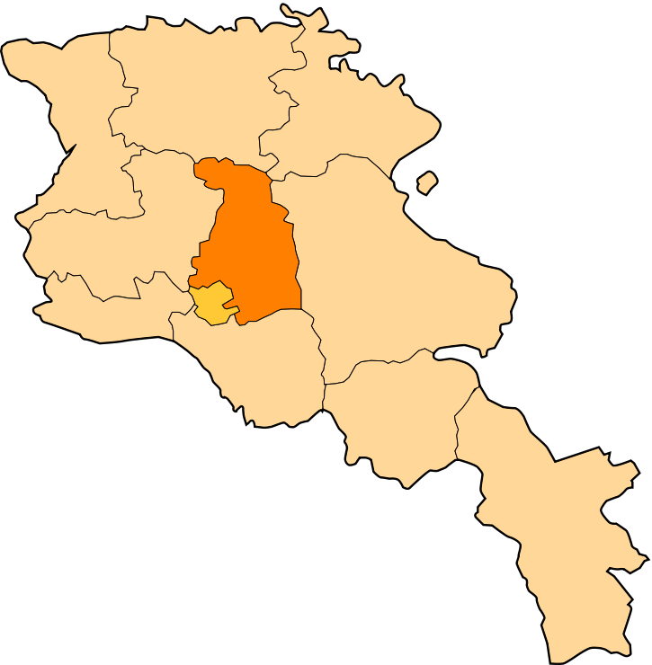

Հետ գնալ
Կոտայքի մարզ
Կոտայքի մարզ, մարզի կարգավիճակ ունեցող վարչատարածքային
միավոր Հայաստանում։
Միակ մարզն է, որը միջպետական սահման չունի Հայաստանի հարևան որևէ պետության հետ։ Կոտայքը միաժամանակ նաև այն չորս
մարզերից մեկն է,
որոնք անմիջապես հարում են մայրաքաղաք Երևանին։
Մարզի տարածքն ընդգրկում է Կոտայքի սարավանդը, Մարմարիկ գետի
ավազանը, Հրազդան գետի ավազանի վերին ու միջին հատվածը,
ինչպես նաև Գեղամա լեռնաշղթայի արևմտյան լանջերը։ Այն հարավ-արևմուտքից սահմանակից է մայրաքաղաքին, արևմուտքից՝
Արագածոտնի, հյուսիսից՝ Լոռու, հյուսիս-արևելքից՝ Տավուշի,
արևելքից՝ Գեղարքունիքի և հարավից՝ Արարատի մարզերին։
Կոտայքի մարզի քաղաքային համայնքների թիվը 7 է՝
Կոտայքի մարզի տարածաշրջաններն են՝
- Հրազդան
- Աբովյան
- Նաիրիի